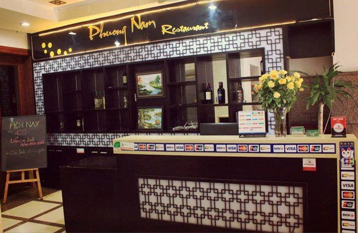
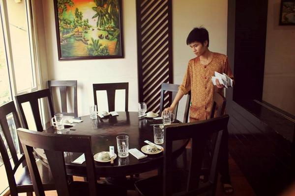

<div id="about-us">
  <div class="container">
    <div class="page-title">
      <span>
        <h1>Về chúng tôi</h1>
      </span>
    </div>
    <div class="page-content">
      <p>Được thành lập từ tình yêu, niềm đam mê bất tận với các món ăn và nếp văn hóa của người dân Nam Bộ, Nhà hàng
        Phương Nam đã chính thức đi vào hoạt động tháng 12/2010 (tại địa chỉ số 2 ngõ 69 Chùa Láng – Hà Nội), mang một
        làn gió ẩm thực mới đến với người Hà Nội.</p>
      
      <p>Chỉ sau 2 năm hoạt động, với tiêu chí, luôn nỗ lực không ngừng để có những món ăn ngon, nhân viên phục vụ thân
        thiện và dịch vụ tốt làm hài lòng mọi quý khách hàng (ngay cả những thực khách khó tính nhất), Nhà hàng Phương
        Nam đã mở rộng quy mô hoạt động, thành lập cơ sở 2 tại 13 Mai Hắc Đế và cơ sở 3 tại 35 Dịch Vọng Hậu, giúp thỏa
        mãn “cơn nghiện” của nhiều tín đồ mê đồ ăn Nam Bộ hơn nữa.</p>
      
      <p>Liên tục cải tiến về chất lượng và đa dạng hóa món ăn, đến nay, trong thực đơn Nhà hàng Phương Nam đã có hơn
        50 món ăn mang bản sắc, dấu ấn riêng của người Nam Bộ. Không chỉ vậy, với tiêu chí, mang đúng “hơi thở và linh
        hồn” của món ăn người dân bản xứ, cùng với sự chỉn chu trong nấu nướng của bếp trưởng, tất cả các nguyên liệu
        chế biến món ăn tại Nhà hàng Phương Nam đều được vận chuyển từ trong miền Nam ra Hà Nội nhưng phải giữ được sự
        tươi ngon. Đây chính là một trong số những lý do, giúp Nhà hàng Phương Nam chinh phục được cả những thực khách
        khó tính, rất sành về ẩm thực Nam Bộ.

        Đến với Nhà hàng Phương Nam, quý khách hàng không chỉ được thỏa mãn vị giác, thị giác, xúc giác với Menu hơn 50
        món ăn Nam Bộ tự chọn mà còn được phục vụ kiểu chuẩn chất người Miền Nam, gần gũi, thân thiện mà ấm áp. Một số
        món ăn khi đến với Nhà hàng Phương Nam, bạn không thể không thử: Lẩu cá linh – Bông điên điển, Lẩu cá kèo lá
        giang, Cá linh chiên giòn, Lẩu mắm…

        Bởi vậy, nếu bạn là người Phương Nam ra Hà Nội lập nghiệp, hoặc nếu bạn chưa có cơ hội thử nét đặc sắc của ẩm
        thực Nam Bộ lần nào hoặc vị giác đã “trót nghiện” với món ăn Nam Bộ và bạn đang “lên cơn thèm”… còn chờ gì nữa,
        hãy liên hệ ngay với chúng tôi qua Tổng đài đặt bàn miễn phí 18002028 để đặt bàn và được tư vấn chu đáo nhất
        nhé!</p>
      <div class="thongtin">
        <p class="ttlh">Thông tin liên hệ:</p>

        <p class="tennh">Nhà hàng Phương Nam – Món ngon miền Nam</p>

        <span class="cs">Cơ sở 1:</span> Số 2, ngõ 69 Chùa Láng, Hà Nội
        <br>

        <span class="cs">Cơ sở 2:</span> 13 Mai Hắc Đế, Hà Nội.
        <br>
        <span class="cs">Cơ sở 3:</span> 35 Dịch Vọng Hậu, Cầu Giấy, Hà Nội
        <br>
        <p class="tdaia"> Tổng đài: 18002028</p>
      </div>
    </div>
    <div class="page-title">
      <span>
        <h1>Một số điều cần biết khi đặn phòng ăn</h1>
      </span>
    </div>
    <div class="text-left page-content " style="text-align: left !important">
      <p>
        Chúng tôi hỗ trợ khách hàng đặt hàng đặt món ăn đưới 3 hình thức
      </p>
      <ul>
        <li>
          Đến trược tiếp nhà hàng
        </li>
        <li>
          Gọi điện thoại đến Hotline(0363341099)
        </li>
        <li>
          Đặt online tại Website của nhà hàng
        </li>
      </ul>
      <p>
        Với quá trình đặt online khách hàng có thể tự do chọn món chọn thực đơn, tìm phòng trống phù hợp theo ngày mình mong muốn.
        Dịch vụ của nhà hàng khách hàng phải đặt riêng dưới hình thức tương tự món ăn.
      </p>
      <p>
          Hiện nay chúng tôi hỗ trợ ba hình thức thanh toán:
      </p>
    <ul>
      <li>
        Thanh toán hết qua cổng thanh toán ONEPAY
      </li>
      <li>
        Đặt Cọc trước 10% giá trị hóa đơn qua cổng thanh toán ONEPAY
      </li>
      <li>
        Đặt trước 
      </li>
    </ul>
    <p>
      Cả ba hình thức sau khi quy khách hàng đặt thành công sẽ có nhân viên hỗ trợ gọi điện xác nhân chúng tôi đã nhân được yêu cầu của bạn,
       riêng đối với hình thức <strong>Đặt trước</strong> đơn hàng cần được nhân viên xác nhân và sẽ bị hủy sau 1 ngày nếu khách hàng không thanh toán
    </p>
    </div>
  </div>
</div>